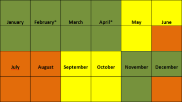

*schoolvakanties in februari, maart en april gelden als middenseizoen
Reservering via mail mogelijk. Op werkdagen van 8:00 tot 22:00 binnen 3 uur antwoord of reservering mogelijk is. In het weekeinde binnen een dag.
Hoogseizoen (oranje) 525 euro per week
Middenseizoen (geel) 400 euro per week
Laagseizoen (groen) 300 euro per week
Gas/water/licht afhankelijk van verbruik (ong 75 euro per week in de winter, ong 25 in de zomer)
Overige kosten:
Linnengoed huur 20 euro per week